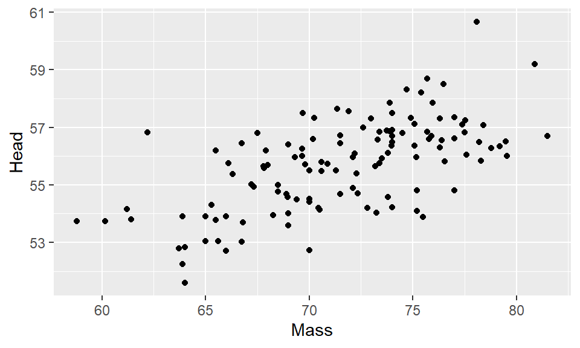
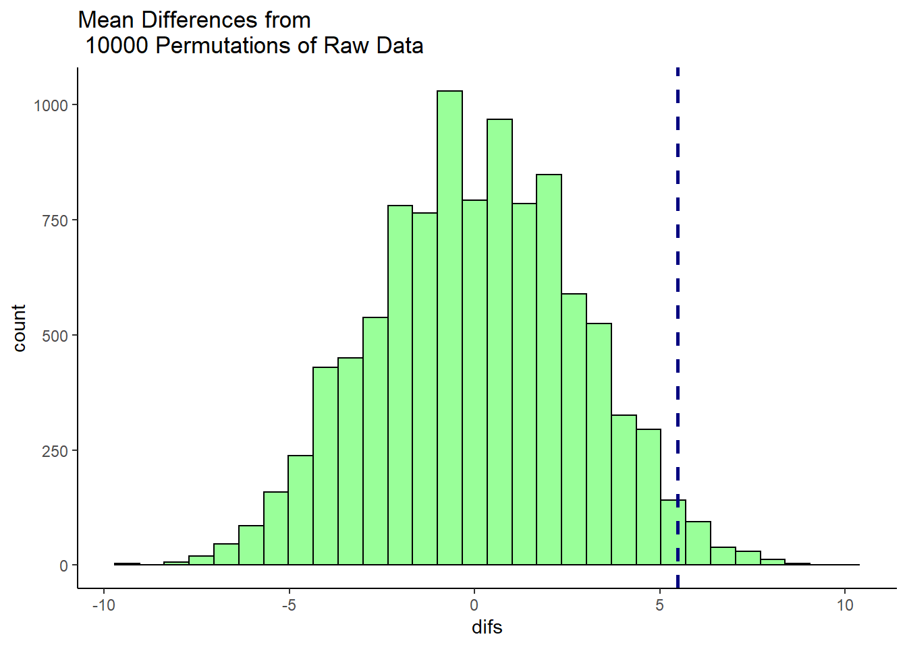

5 Data Visualization
The package ggplot2 is used to visualize data. Before starting you should load the tidyverse package, which includes ggplot2 and other tools, at the very top of your script.
5.1 Intro to ggplot2
Read in data
## Parsed with column specification:
## cols(
## BirdID = col_character(),
## KnownSex = col_character(),
## BillDepth = col_double(),
## BillWidth = col_double(),
## BillLength = col_double(),
## Head = col_double(),
## Mass = col_double(),
## Skull = col_double(),
## Sex = col_double()
## )Start with a black canvas

Just adding the datset to the blank canvas, but nothing plotted yet.
You need to use aes() for every ggplot you make, and inside aes() we’ll put what our x and y axis will be

We say what the x and y are, and it creates scales on each axis, but we didn’t tell it what to plot yet.

Need to add points.

What if we want to change the color of the points?

What if we want to color the points based on another variable

Basically, you can just keep adding to the initial plot to make your graph the best visualization to fit your data.
Another Example!
## Parsed with column specification:
## cols(
## day = col_double(),
## date = col_date(format = ""),
## county = col_character(),
## population = col_double(),
## total = col_double()
## )## # A tibble: 6 x 5
## day date county population total
## <dbl> <date> <chr> <dbl> <dbl>
## 1 0 2020-03-04 Dallas 2734111 0
## 2 0 2020-03-04 Harris 4978845 0
## 3 0 2020-03-04 Travis 1291502 0
## 4 1 2020-03-05 Dallas 2734111 0
## 5 1 2020-03-05 Harris 4978845 0
## 6 1 2020-03-05 Travis 1291502 0## # A tibble: 6 x 5
## day date county population total
## <dbl> <date> <chr> <dbl> <dbl>
## 1 92 2020-06-04 Dallas 2734111 249
## 2 92 2020-06-04 Harris 4978845 241
## 3 92 2020-06-04 Travis 1291502 95
## 4 93 2020-06-05 Dallas 2734111 250
## 5 93 2020-06-05 Harris 4978845 247
## 6 93 2020-06-05 Travis 1291502 95